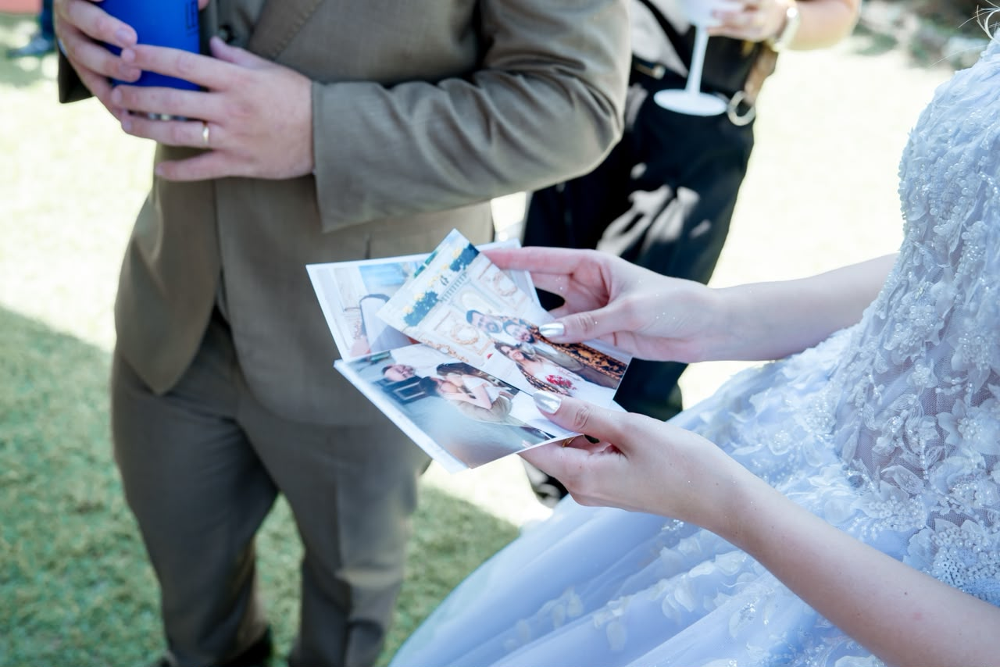

Histórias reais contadas com leveza, verdade e respeito
Fotografia documental de casamento para casais que desejam viver cada segundo da celebração sem poses forçadas — com a tranquilidade de quem conhece profundamente o altar, os ritos e a emoção de cada família.
Olhares, gestos e momentos que permanecem
Do silêncio emocionado no altar à saída da igreja e aos abraços da família. Uma seleção de registros reais em cerimônias e celebrações na região.
Sensibilidade documental, respeito ao altar e lembranças na hora
Casamento passa rápido demais para virar uma sessão de fotos engessada. Meu papel é registrar a verdade do que vocês estão vivendo, unindo técnica, discrição e carinho com cada convidado.

Por ter sido seminarista e atuar há anos na comunicação católica, conheço profundamente cada rito e momento da liturgia — antecipando os gestos essenciais no ângulo certo, sem jamais invadir o espaço do altar ou quebrar o clima de oração.
Um diferencial que emociona noivos e familiares: levo equipamento de revelação térmica profissional para imprimir fotografias selecionadas na hora durante a festa, entregando lembranças físicas com qualidade de laboratório já no grande dia.
Tratamento cuidadoso de luz e cor com estética natural e atemporal, entregando as fotografias editadas em alta resolução por meio de galeria online organizada para baixar e compartilhar com facilidade.
Formatos pensados para o seu momento
Cada celebração tem seu próprio ritmo. Montamos propostas sob medida de acordo com a duração do evento e o estilo do casal.
Cerimônia & Retratos
Ideal para casamentos íntimos, celebrações no civil ou cerimônia religiosa seguida de ensaio do casal.
- Cobertura documental completa da cerimônia
- Fotos protocolares com pais, padrinhos e casal
- Galeria online privada em alta resolução
Cobertura Completa
Do making of até a recepção, com olhar duplo e lembranças impressas entregues na festa.
- Making of, cerimônia e recepção completa
- Atuação com segundo fotógrafo
- Fotos reveladas/impressas na hora na recepção
- Prévia rápida nos primeiros dias + galeria completa
Pré-Wedding & Pedido
Registros leves e espontâneos para eternizar o noivado ou preparar o ensaio antes do casamento.
- Ensaio em locação externa na região
- Direção leve para casais que não gostam de posar
- Ideal para convites, site dos noivos e decoração
“Espaço reservado para o depoimento de um dos casais que você fotografou — sobre como se sentiram à vontade no dia e a emoção ao receber as fotos.”— Nome dos Noivos · Casamento em Astolfo Dutra
Vamos conversar sobre o grande dia de vocês?
Preencha ao lado para verificar se a data está livre e receber uma proposta personalizada diretamente pelo WhatsApp.